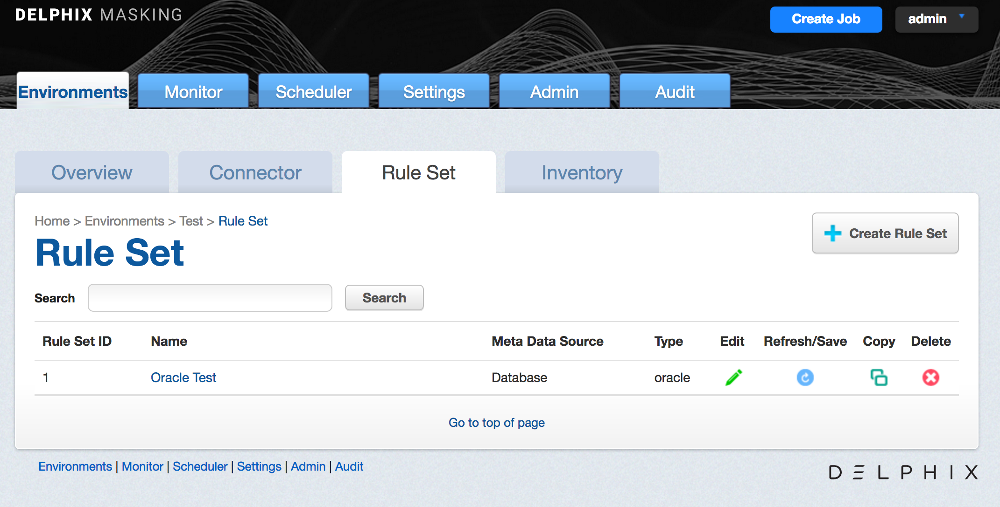
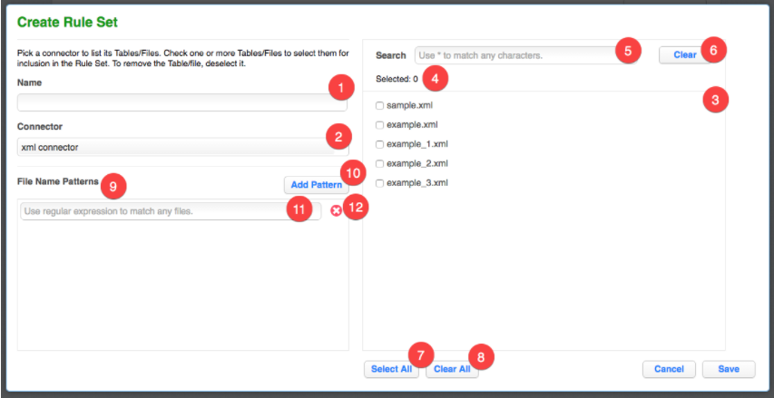

Managing Rule Sets¶
This section describes how Rule Sets can be created, edited, and removed.
The Rule Sets Screen¶
From anywhere within an Environment, click the Rule Set tab to display the Rule Sets associated with that environment. The Rule Sets screen appears. If you have not yet created any rule sets, the Rule Set list is empty.

The Rule Sets screen contains the following information and actions:
-
Rule Set ID — The numeric ID of the rule set used to refer to the rule set from the Masking API.
-
Name — The name of the rule set.
-
Meta Data Source — The type of rule set. One of Database, File, or Mainframe.
-
Type — The specific type of rule set.
-
Edit — Edit the rule set. See more details below.
-
Refresh/Save — Refresh the rule set. Only applies to Database rule sets. See more details below.
-
Copy — Copy the rule set. See more details below.
-
Delete — Delete the rule set. See more details below.
The rule sets on the screen can be sorted by the various informational fields by clicking on the respective field.
The Create/Edit Rule Set Window¶
In the upper right-hand corner, click the Create Rule Set button.
The Create Rule Set window appears.

1 |
Rule Set Name Input Field When editing an existing rule set, this field will be filled with the existing rule set name by default. |
2 |
Connector List When creating a new rule set, all available connectors will be listed here. When editing an existing rule set, only the connector currently in use will appear. |
3 |
Table or File List If a database connector is selected in the connector list, all available tables in the database schema associated with the connector will appear in this list. If a file connector is selected, all available files in the directory associated with the connector will appear in this list. |
4 |
Selected Table or File Number Displays how many tables or files you have selected. |
5 |
Search Query Input Field You can enter a search query here. After typing the search query, press ENTER to execute the search query. INFO: search query
|
6 |
Clear Search Button Click to remove any search query. |
7 |
Select All Button Click to select all tables or files in the table or file list. |
8 |
Clear All Button Click to deselect all tables or files in the table or file list. |
9 |
File Name Patterns Editor This editor will appear only when the selected connector is a file connector. |
10 |
Add File Pattern Button Click to add a new file pattern entry below. |
11 |
File Pattern Input Field Enter the file pattern here. |
12 |
Remove File Pattern Button Click to remove a file pattern. |
Creating a Rule Set¶
To create a new rule set:
-
Click on the name of an Environment, and then click the Rule Set tab.
-
In the upper right-hand corner of the Rule Set screen, click Create Rule Set.
-
The Create Rule Set screen lets you specify which tables belong in the rule set.
-
Enter a name for the new Rule Set.
-
Select a Connector name from the drop-down menu.
-
The list of tables for that connector appears. If you have not yet created any connectors, the list is empty. Click individual table names to select them, or click Select All to select all the tables in the connector. See "Create/Edit Rule Set Window" for a description of the screen and other options.
-
Click Save.
You may then need to define the Rule Set by modifying the table settings as described in "Modifying Tables in a Rule Set" below.
For example:
-
For a table in a database rule set, you may want to filter data from the table.
-
For a file in a file or mainframe rule set, you must select a File Format to use.
Refreshing a Rule Set¶
Refreshing a rule set will result in the columns in the tables in the rule set being rescanned. As a result, the inventory associated with the rule set will also be refreshed, but any pre-existing algorithm assignments will be retained.
To refresh a rule set:
-
Click the Refresh/Save icon to the right of the rule set on the Rule Set screen.
-
The Refresh/Savet icon will turn to an hour glass as the the associated tables are rescanned.
-
After the refresh is complete, the Refresh/Savet icon will return to the circular arrow.
Copying a Rule Set¶
If you copy a Rule Set, the inventory associated with that Rule Set will also be copied. Also, any filter conditions defined for that Rule Set will be copied.
To copy a rule set:
-
Click the Copy icon to the right of the rule set on the Rule Set screen.
-
The Copy Rule Set window appears.
-
Enter a Name for the new rule set.
-
Click Save.
-
Modify the rule set as you want, using the procedures described above.
Deleting a Rule Set¶
If you delete a Rule Set, the inventory associated with that Rule Set will also be deleted. Also, any filter conditions defined for that Rule Set will be deleted.
To delete a rule set, click the Delete icon to the right of the rule set on the Rule Set screen.
The Rule Set Screen¶
From the Rule Set tab, click on a rule set to display the tables or files in the rule set. The Rule Set screen appears.

The Rule Set screen contains the following information and actions:
-
Table or File or Pattern — The name of the table or file/file pattern in the rule set.
-
Edit — Edit the table or file in the rule set. See more details below.
-
Delete — Delete the table or file from the rule set.
For rule sets with a large number of tables or files, the Rule Set screen will be displayed on pages which can be navigated by the controls at the bottom of the list on the page. The tables or files displayed may also be filtered using the Search field and button.
Editing/Modifying a Rule Set¶
To edit a rule set:
-
Click the Edit icon to the right of the rule set on the Rule Set screen.
-
Click the Edit Rule Set button towards the top.
-
The Create Rule Set screen appears. This screen lets you specify which tables belong in the rule set.
-
Modify the rule set as you want, using the preceding procedures.
Removing a Table or File¶
To remove a table or file from a rule set:
-
From the Rule Set screen, click the name of the desired rule set.
-
Click the red delete icon to the right of the table or file you want to remove.
INFO
If you remove a table/file from a rule set and that table/file has an inventory, that inventory will also be removed.
Modifying Tables in a Rule Set¶
The features in this section are disabled for file and mainframe rule sets.
You can modify tables in a rule set as follows:
Logical Key¶
If your table has no primary keys defined in the database, and you are using an In-Place strategy, you must specify an existing column or columns to be a logical key. This logical key does not change the target database; it only provides information to Delphix. For multiple columns, separate each column using a comma. Note: If no primary key is defined and a logical key is not defined an identify column will be created.
To enter a logical key:
-
From the Rule Set screen, click the name of the desired rule set.
-
Click the green edit icon to the right of the table whose filter you wish to edit.
-
On the left, select Logical Key.
-
Edit the text for this property.
-
To remove any existing code, click Delete.
-
Click Save.
Edit Filter¶
Use this function to specify a filter to run on the data before loading it to the target database.
To add a filter to a database rule set table or edit a filter:
-
From the Rule Set screen, click the name of the desired rule set.
-
Click the green edit icon to the right of the table you want.
-
On the left, select Edit Filter.
-
Edit the properties of this filter by entering or changing values in the Where field.
Be sure to specify column name with table name prefix (for example, customer.cust_id \<1000).
-
To remove an existing filter, click Delete.
-
Click Save.
Custom SQL¶
Use this function to use SQL statements to filter data for a table.
To add or edit SQL code:
-
From the Rule Set screen, click the name of the desired rule set.
-
Click the green edit icon to the right of the table you want.
-
On the left, select Custom SQL.
-
Enter custom SQL code for this table.
Delphix will run the query to subset the table based on the SQL you specify.
-
To remove any existing code, click Delete.
-
Click Save.
Table Suffix¶
If you have tables with names that change monthly, for example tables that are appended with the current date, you can set a table suffix for a rule set.
To set a table suffix for a rule set:
-
In the Rule Set screen, click the name of the desired rule set.
-
Click the green edit icon to the right of the table for which you wish to set the suffix.
-
On the left, select Table Suffix.
-
The Original Table Name will already be filled in.
-
(Optional) Enter a Suffix date Pattern (for example, mmyy).
-
(Optional) Enter a Suffix Value, if you want to append a specific value.
-
(Optional) Enter a Separator (for example, _). This value will be inserted before the suffix value (for example, tablename_0131).
-
Click Save.
Add Column¶
Use this function to select a column or columns from a table when you don't want to load data to all the columns in a table.
To add a column to a database rule set table or edit a column:
-
From the Rule Set screen, click the name of the desired rule set.
-
Click the green edit icon to the right of the table you want.
-
On the left, select Add Column.
-
Select one or more column names to include in the table. To remove a column, deselect it.
-
You can also choose Select All or Select None.
-
Select Save.
Join Table¶
Use this function to specify a SQL join condition so that you can define primary key/foreign key relationships between tables.
To define or edit the join condition for a table:
-
From the Rule Set screen, click the name of the desired rule set.
-
Click the green edit icon to the right of the table you want.
-
On the left, select Join Table.
-
Edit the properties for this join condition.
-
To remove an existing join condition, click Delete.
-
Click Save.
List¶
Use this function to select a list to use for filtering data in a table.
To add or edit a list:
-
From the Rule Set screen, click the name of the desired rule set.
-
Click the green edit icon to the right of the table you want.
-
On the left, select List.
-
Edit the text file properties for this list.
-
Select a column.
-
Enter or browse for a filename.
-
Files that have already been specified appear next to Existing File.
-
-
To remove an existing list file, click Delete.
-
Click Save.
Creating a Ruleset For File Formats¶
Once you create a ruleset with a file or set of files, you will need to assign those files to their appropriate file format.
This is accomplished by editing the ruleset. Click on the edit button for the file the Edit File window will appear with the file name. From the format drop-down select the proper format for the file.
- If the file is a Mainframe data sets file with a copybook you will see a checkbox to signify if the file is variable length.
- For all other file types, select the end-of-record to let Delphix know whether the file is in windows/dos format (CR+LF) or Linux format (LF).
- If the file is a delimited file you will have a space to put in the delimiter.
- If there are multiple files in the ruleset you will have to edit each one individually and assign it to the appropriate file format.